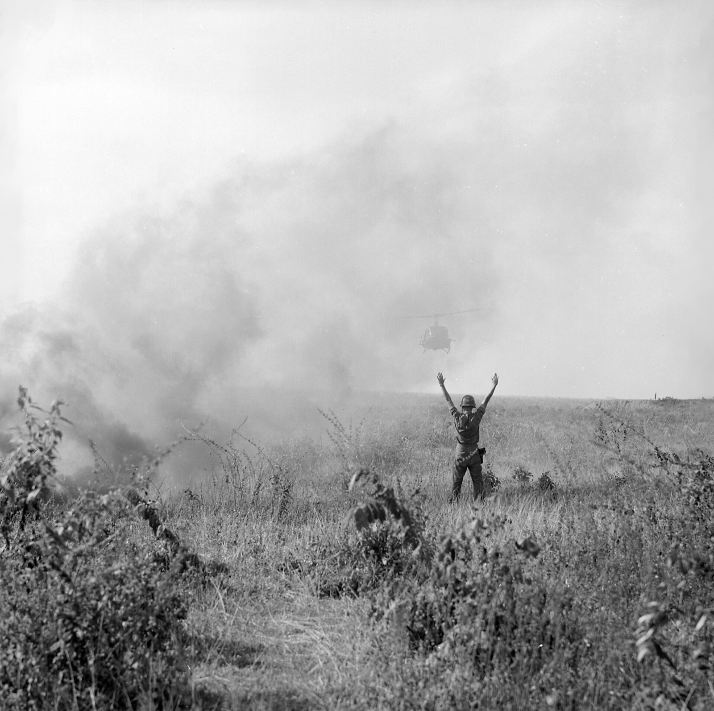
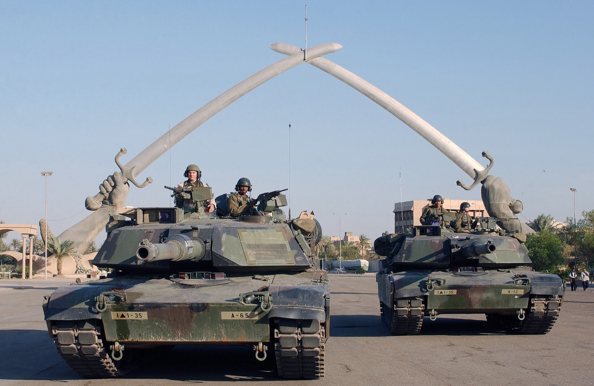

The Best and Worst Decisions
The Society for Historians of American Foreign Relations surveyed its members to rank the ten best and ten worst U.S. foreign policy decisions. The Council on Foreign Relations published the results.14
Ranked among the best
- #1 Marshall Plan (1948): economic aid that rebuilt Western Europe
- #2 Creating the United Nations (1945)
- #6 Creating NATO (1949)
- #7 Bretton Woods system (1944): set up the IMF and World Bank
- #10 Cuban Missile Crisis (1962): a naval quarantine and back-channel talks instead of airstrikes
Ranked among the worst
- #1 Invasion of Iraq (2003)
- #2 Sending combat forces to Vietnam (1965)
- #4 Supporting the overthrow of Iran's Prime Minister Mosaddeq (1953)
- #9 Gulf of Tonkin Resolution (1964)
Three of the worst involve military intervention or a rushed vote for war. One of them led to decades of tension with Iran.
Many of the best decisions were built on diplomacy, alliances, and economic partnership. Many of the worst were military interventions. That pattern is a big part of why USFPRA exists.
The Vietnam War

A U.S. soldier guides a helicopter in for a landing in Vietnam, 1966. Public domain, via Wikimedia Commons.
How it started
In August 1964, after reports of North Vietnamese attacks on U.S. Navy ships, Congress passed the Gulf of Tonkin Resolution, which let President Johnson use military force in Southeast Asia without declaring war. It passed with almost no debate.27 Historians now believe the second reported attack probably never happened.14 In 1965, Johnson sent combat troops, and within three years more than half a million Americans were serving there.14
The cost
- 58,220 U.S. military deaths10
- About $111 billion at the time, or about $686 billion in 2008 dollars, for military operations alone11
- Huge protests and division at home, including on college campuses
The controversy
In 1971, the Pentagon Papers, a secret Defense Department history of the war, were leaked to the press. They showed that the government had misled the public about the war for years.12
The goal was never reached
The goal was to keep South Vietnam from falling to communist North Vietnam. U.S. troops left in 1973, and Saigon fell in 1975.13
The lesson
A rushed vote, based on information that turned out to be wrong, gave the President a blank check. Vietnam is the reason Congress passed the War Powers Resolution in 1973.3
The Iraq War (2003)

U.S. tanks in Baghdad, 2003. Public domain, via Wikimedia Commons.
How it started
In 2002, Congress authorized force against Iraq. The main argument was that Saddam Hussein had weapons of mass destruction (WMDs). The U.S. invaded in March 2003.
What we learned
The weapons were never found. In 2004, the CIA's Iraq Survey Group reported that Iraq had no chemical or biological weapons at the time of the invasion and was not rebuilding its nuclear program.15
The cost
- 4,488 U.S. military deaths, plus at least 3,400 U.S. contractors16
- An estimated 134,000 Iraqi civilians killed by direct violence16
- At least $2.2 trillion to U.S. taxpayers, including veterans' care through 2053. That is about 44 times the government's 2002 estimate of $50 to $60 billion.16
The consequences
The occupation lasted years longer than expected and damaged America's standing in the world.14 The 2002 authorization stayed on the books for more than 20 years until Congress finally repealed it in December 2025.17
The lesson
Wrong intelligence, low cost estimates, and no plan for afterward led to one of the costliest mistakes in U.S. history. Congress and the public need real information and real debate before war, not after.
Is History Repeating?
The 2026 Iran conflict began without a vote in Congress, and it has already cost more than expected. We think it is time to apply the lessons of Vietnam and Iraq.
Read About the Iran Conflict